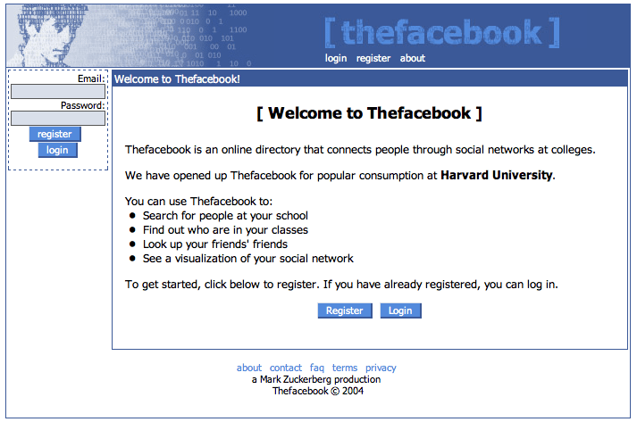
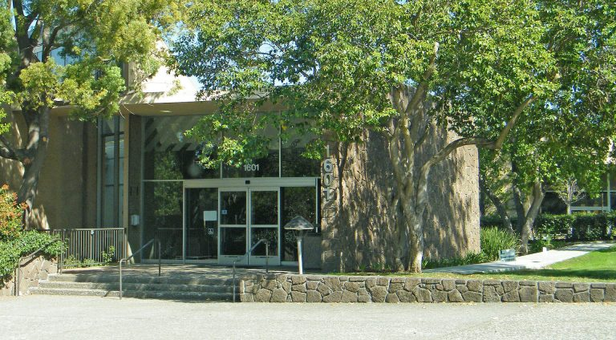

Quando pensamos em quem fundou o Facebook, a primeira pessoa que vem à mente é Mark Zuckerberg. Mas isso é só parte da resposta… A rede social nasceu em uma universidade e contou até com um brasileiro nos primórdios do seu desenvolvimento, que teve que brigar na justiça para ser reconhecido como cofundador da plataforma.
Quem fundou o Facebook?
O Facebook surgiu em 2004, como uma evolução de um site anterior de Mark Zuckerberg, então estudante de computação em Harvard, chamado “Facemash”.
O site consistia em relacionar fotos das estudantes do campus, com opções para os visitantes darem notas e dizer quem era a mais sexy. Por essa “brincadeira” de “hot or not”, Zuckerberg quase foi expulso do campus e processado.
A ideia persistiu, e Zuckerberg convidou um amigo do curso de Economia, um brasileiro chamado Eduardo Saverin, para tocar uma versão mais comportada do Facemash.
O nome inicial, Thefacebook, foi inspirado nos anuários dos colégios e faculdades, que trazem fotos e nomes dos alunos. Saverin injetou US$ 1 mil como capital inicial.
Enganando a reitoria
Para utilizar os servidores da universidade, Zuck enganou os reitores, dizendo que criaria uma rede social para Harvard, quando na verdade estabeleceu um negócio similar. Ele foi posteriormente processado mas, antes disso, a primeira versão do Thefacebook entrou no ar em 04 de fevereiro de 2004, para graduandos locais.
Com um mês de operação, metade dos estudantes de Harvard já possuíam perfis no Thefacebook, e foi quando Zuckerberg e Saverin chamaram outros graduandos para ajudar a tocar o experimento, já na intenção de fazer dele uma empresa: o programador Dustin Moskovitz, o relações públicas Chris Highes e Andrew McCollum, que também entrou como investidor. Todos receberam status de fundadores.
Ainda em 2004, enquanto o Thefacebook se expandia para outras universidades, Sean Parker, cofundador do Napster, se tornou o presidente da empresa. Ele mudou a sede para Palo Alto, na Califórnia, e todos se mudaram para lá, menos Saverin, que preferiu continuar seus estudos e administrar a rede à distância.
Pouco tempo depois, uma série de desentendimentos entre Saverin e Zuckerberg levaram ao desligamento do brasileiro do Facebook, e a remoção de seu status de fundador. Por um tempo, acreditava-se que Zuckerberg sozinho fundou o Facebook.
Em 2005, o Thefacebook removeu o “The” do nome, ficando apenas Facebook, e abriu o acesso para todos os internautas com mais de 13 anos. O resto, é história.
Tem dúvidas? Pergunte ao Tecnochat
A inteligência artificial do Tecnoblog pode tirar dúvidas sobre a matéria que você acabou de ler. Descubra o significado de um termo mencionado ou explore mais o assunto fazendo perguntas no Tecnochat!